Walkera HM004
ERG GOED, motor tuning
Standaard wordt de gyro geleverd met potmeter in de middelste stand als je er in kijk zie je een (+) potmeter(deze regelt de gain stroom door de fet) een 1/4 slag tegen de klok in is minder gevoelig en van uit het midden 1/4 slag met de klok mee wordt hij gevoeliger. Let op er zit geen begin of eindstop op de potmeter dus onthoud goed welk kant en hoeveel je hem verdraaid heb. Anders moet je hem open maken en visueel weer in het midden zetten.( In de praktijk merk je maar weinig verschil, maar het kan net genoeg zijn voor een iets stabielere vlucht)
Forums
Winkels
RCVliegshop.nl - Dé Goedkoopste RC Helicopter En RC Hydrofoam Webshop in NL!
Ornithopter
TheCatsWhiskers.pdf (applicationpdf Object)
BittenByADragonfly.PDF (applicationpdf Object)
Gyroscopes Online - Kit Ornithopter - FreeBird -
Ornithopter_Researcher's_Forum
behemoth4.PDF (applicationpdf Object)
Rotor Bladen
Voor het uitrichten van de hoofd rotorbladen hebben we verschillende hulpstukjes geprobeerd.
Als je wat meer ervaring hebt, kun je het ook gewoon doen door de bladen zo te stellen, dat het geheel netjes in evenwicht is (wel even van te voren de bal-verbindingen recht zetten, want dan bewegen de rotors veel soepeler). Het evenwicht kan het beste getest worden door het dynamisch evenwicht te bekijken, zetje naar boven en zetje naar beneden moet gelijk effect sorteren.
De laatste: een dun houten latje (5*1 mm), voorzien van 2 ringetjes, de precies in de rotorhouder passen. Deze wordt met elastiekjes vast gemonteerd. Bij het vliegen heb je er geen last van, echter het houtje is niet crash-bestendig.
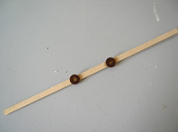 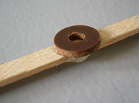
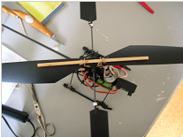 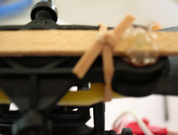
De eerste, een plastic strip ter lengte van de gehele rotor, met daarin 2 schroefjes met ringetjes, die precies pas zitten in de rotorhead.
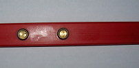
Paddels
Her uitrichten van de paddels is vrij lastig. Ook het plaatje op de vliegshop vond ik niet geheel duidelijk, dus hier een andere poging:
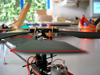
Balhoofden
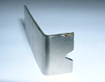
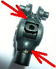
RCVliegshop.nl (maart 2006)
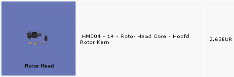
onder de nieuwe Rotor Head Core (met Z-nummer) HM-004-Z-14,
overgenomen uit Verstevigde Rotorkern HM#04 - RCVliegshop.nlForum
Hier heeft ook Eric_S het idee geopperd om een 2 mm gat in de lengte van de assen, door en door te boren eb hier vervolgens een 2mm carbon staafje in te stoppen, zodat beide pootjes verbonden zijn (in de houder moet dan wel iets worden weggevijld.
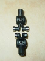
Speciale aluminium rotor head, aangeboden op Ebay (maart 2006)
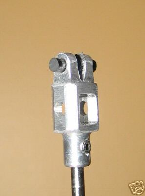 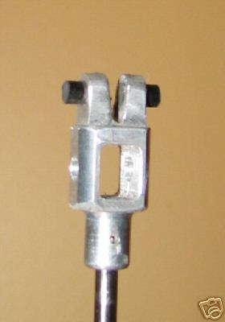
Main Gear
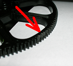
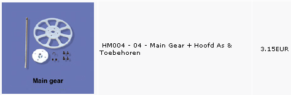
Trainings Kruis
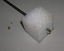
Landings gestel
Na enige tijd klemmen de staafjes onvoldoende, dus lijm erin.
Hier een reparatie van het landings-gestel. Door gebruik te maken van de hulpstukjes van het trainingskruis, wordt een stevige constructie verkregen. Eerst 2 gaatjes van 1 mm geboord in het hulpstukje, vervolgens 0.8 mm koperdraad erdoor en daarmee de rest fixeren en dat hot-lijm erop.
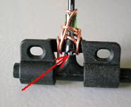 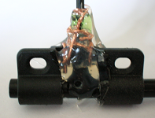
Batterij Houder
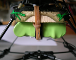 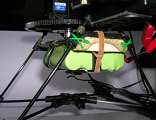
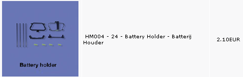
Staart
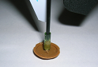
Oplader
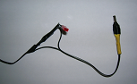